import os
os.environ["KERAS_BACKEND"] = "tensorflow"
import keras
import bayesflow as bf
import numpy as np
import matplotlib.pyplot as pltEstimating parameters of a normal distribution
Simple example
Simulator
def context(batch_size, n=None):
if n is None:
n = np.random.randint(10, 101)
return dict(n=n)
def prior(mu=None, sigma=None):
if mu is None:
mu = np.random.normal()
if sigma is None:
sigma = np.random.gamma(shape=2)
return dict(mu=mu, sigma=sigma)
def likelihood(n, mu, sigma):
y = np.random.normal(mu, sigma, size=n)
return dict(y=y)
def summary(y):
mean = np.mean(y)
sd = np.std(y, ddof=1)
return dict(mean=mean, sd=sd)simulator = bf.make_simulator([prior, likelihood, summary], meta_fn=context)Prior predictives
data = simulator.sample(1000)fig=bf.diagnostics.pairs_samples(data, variable_keys=["mean", "sd"])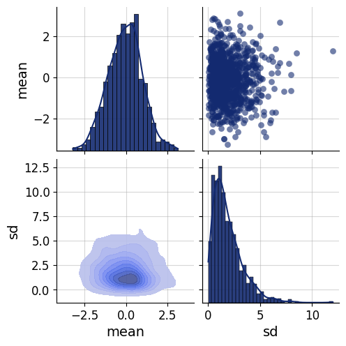
Approximator
adapter = (bf.Adapter()
.broadcast("n", to="mean")
.constrain("sigma", lower=0)
.concatenate(["n", "mean", "sd"], into="inference_conditions")
.concatenate(["mu", "sigma"], into="inference_variables")
.drop("y")
)adapter(data){'inference_conditions': array([[73. , -0.3101565 , 1.85986046],
[73. , -0.3378794 , 4.43681815],
[73. , 0.66380707, 3.48889386],
...,
[73. , 1.00937811, 0.40078604],
[73. , 0.63226432, 0.55506636],
[73. , -1.84457355, 0.95182243]]),
'inference_variables': array([[-0.25619292, 2.00083979],
[ 0.0145662 , 4.08056985],
[ 0.36442674, 3.1198835 ],
...,
[ 0.91677106, -0.7230314 ],
[ 0.68635459, -0.42010279],
[-1.86425704, 0.65961324]])}approximator = bf.approximators.ContinuousApproximator(
inference_network=bf.networks.CouplingFlow(permutation="swap", subnet_kwargs=dict(dropout=False)),
adapter=adapter
)epochs=10
num_batches=100
batch_size=256schedule = keras.optimizers.schedules.CosineDecay(initial_learning_rate=1e-3, decay_steps=epochs * num_batches)
optimizer = keras.optimizers.Adam(learning_rate=schedule)approximator.compile(optimizer)history=approximator.fit(
epochs=epochs,
num_batches=num_batches,
batch_size=batch_size,
simulator=simulator)INFO:bayesflow:Building dataset from simulator instance of SequentialSimulator.
INFO:bayesflow:Using 10 data loading workers.
INFO:bayesflow:Building on a test batch.Epoch 1/10
100/100 ━━━━━━━━━━━━━━━━━━━━ 6s 13ms/step - loss: 3.1127 - loss/inference_loss: 3.1127
Epoch 2/10
100/100 ━━━━━━━━━━━━━━━━━━━━ 2s 18ms/step - loss: 2.1562 - loss/inference_loss: 2.1562
Epoch 3/10
100/100 ━━━━━━━━━━━━━━━━━━━━ 2s 18ms/step - loss: 1.6789 - loss/inference_loss: 1.6789
Epoch 4/10
100/100 ━━━━━━━━━━━━━━━━━━━━ 2s 18ms/step - loss: 0.9218 - loss/inference_loss: 0.9218
Epoch 5/10
100/100 ━━━━━━━━━━━━━━━━━━━━ 2s 18ms/step - loss: 1.0360 - loss/inference_loss: 1.0360
Epoch 6/10
100/100 ━━━━━━━━━━━━━━━━━━━━ 2s 19ms/step - loss: 0.4432 - loss/inference_loss: 0.4432
Epoch 7/10
100/100 ━━━━━━━━━━━━━━━━━━━━ 2s 17ms/step - loss: 0.3578 - loss/inference_loss: 0.3578
Epoch 8/10
100/100 ━━━━━━━━━━━━━━━━━━━━ 2s 17ms/step - loss: 0.3496 - loss/inference_loss: 0.3496
Epoch 9/10
100/100 ━━━━━━━━━━━━━━━━━━━━ 2s 17ms/step - loss: 0.1186 - loss/inference_loss: 0.1186
Epoch 10/10
100/100 ━━━━━━━━━━━━━━━━━━━━ 2s 17ms/step - loss: 0.0109 - loss/inference_loss: 0.0109fig=bf.diagnostics.plots.loss(history)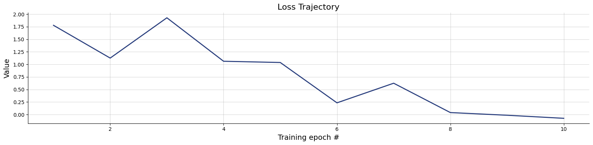
Validation
test_data = simulator.sample(1000, n=50)
prior = dict(mu=test_data["mu"], sigma=test_data["sigma"])
posterior = approximator.sample(num_samples=500, conditions=test_data)fig=bf.diagnostics.plots.calibration_ecdf(estimates=posterior, targets=prior)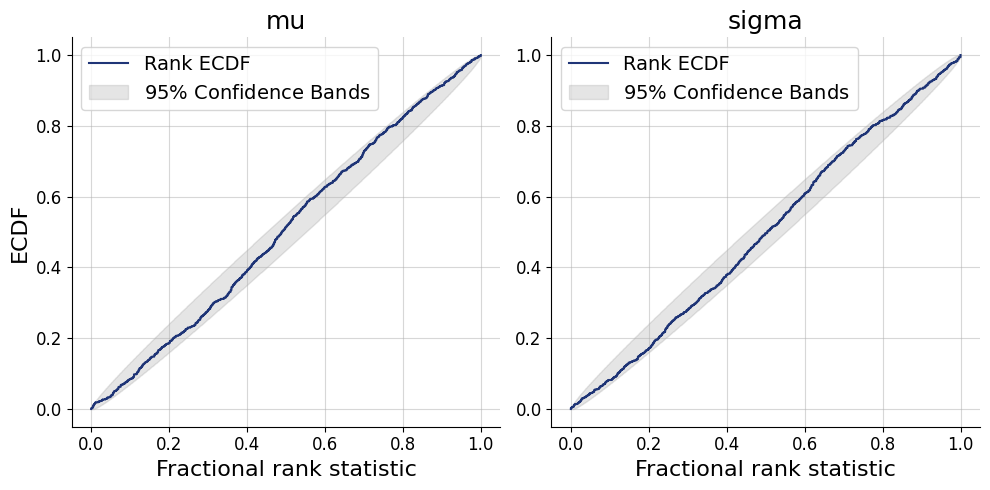
fig=bf.diagnostics.z_score_contraction(estimates=posterior, targets=prior)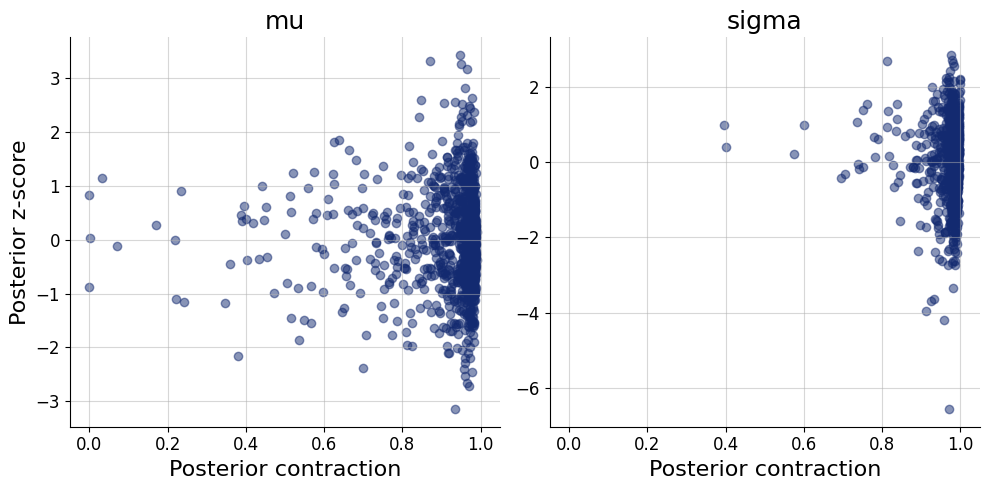
fig=bf.diagnostics.plots.recovery(estimates=posterior, targets=prior)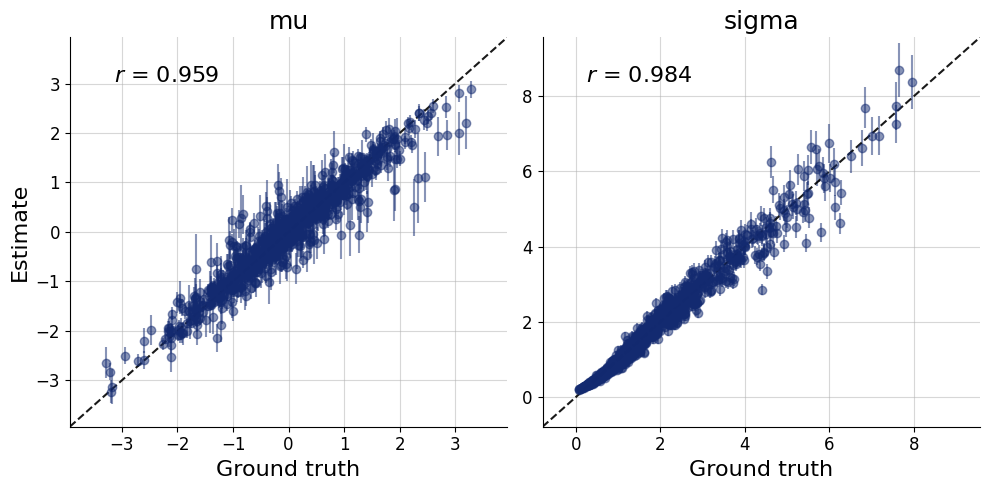
Inference
inference_data = dict(n=50, mean=np.array([[0.5]]), sd=np.array([[2]]))posterior = approximator.sample(num_samples=1000, conditions=inference_data)fig=bf.diagnostics.pairs_posterior(estimates=posterior, priors=prior)Using a summary network
Approximator
adapter = (bf.Adapter()
.broadcast("n", to="y")
.as_set("y")
.constrain("sigma", lower=0)
.rename("n", "inference_conditions")
.rename("y", "summary_variables")
.concatenate(["mu", "sigma"], into="inference_variables")
.drop(["mean", "sd"])
)workflow = bf.BasicWorkflow(
inference_network=bf.networks.CouplingFlow(subnet_kwargs=dict(dropout=False)),
summary_network=bf.networks.DeepSet(
base_distribution="normal",
dropout=False,
mlp_widths_equivariant=(16, 16),
mlp_widths_invariant_inner=(16, 16),
mlp_widths_invariant_outer=(16, 16),
mlp_widths_invariant_last=(16, 16)
),
simulator=simulator,
adapter=adapter,
inference_variables=["mu", "sigma"],
inference_conditions="n",
summary_variables="y"
)history=workflow.fit_online(epochs=epochs, num_batches_per_epoch=num_batches, batch_size=batch_size)INFO:bayesflow:Fitting on dataset instance of OnlineDataset.
INFO:bayesflow:Building on a test batch.Epoch 1/10
100/100 ━━━━━━━━━━━━━━━━━━━━ 12s 37ms/step - loss: 3.3305 - loss/inference_loss: 2.8199 - loss/summary_loss: 0.5106
Epoch 2/10
100/100 ━━━━━━━━━━━━━━━━━━━━ 5s 50ms/step - loss: 1.7787 - loss/inference_loss: 1.4463 - loss/summary_loss: 0.3324
Epoch 3/10
100/100 ━━━━━━━━━━━━━━━━━━━━ 5s 51ms/step - loss: 1.2010 - loss/inference_loss: 0.9137 - loss/summary_loss: 0.2873
Epoch 4/10
100/100 ━━━━━━━━━━━━━━━━━━━━ 5s 54ms/step - loss: 0.8284 - loss/inference_loss: 0.5727 - loss/summary_loss: 0.2557
Epoch 5/10
100/100 ━━━━━━━━━━━━━━━━━━━━ 6s 57ms/step - loss: 0.5715 - loss/inference_loss: 0.3398 - loss/summary_loss: 0.2317
Epoch 6/10
100/100 ━━━━━━━━━━━━━━━━━━━━ 6s 55ms/step - loss: 0.4893 - loss/inference_loss: 0.2788 - loss/summary_loss: 0.2105
Epoch 7/10
100/100 ━━━━━━━━━━━━━━━━━━━━ 6s 55ms/step - loss: 0.4544 - loss/inference_loss: 0.2548 - loss/summary_loss: 0.1996
Epoch 8/10
100/100 ━━━━━━━━━━━━━━━━━━━━ 6s 58ms/step - loss: 0.3392 - loss/inference_loss: 0.1429 - loss/summary_loss: 0.1962
Epoch 9/10
100/100 ━━━━━━━━━━━━━━━━━━━━ 6s 59ms/step - loss: 0.3685 - loss/inference_loss: 0.1744 - loss/summary_loss: 0.1941
Epoch 10/10
100/100 ━━━━━━━━━━━━━━━━━━━━ 6s 60ms/step - loss: 0.3299 - loss/inference_loss: 0.1355 - loss/summary_loss: 0.1945Validation
test_data = simulator.sample(1000, n=50)plots=workflow.plot_default_diagnostics(test_data=test_data)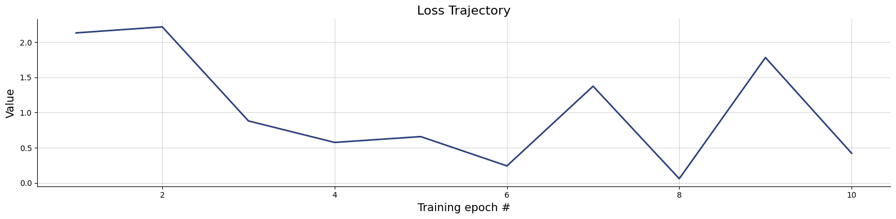
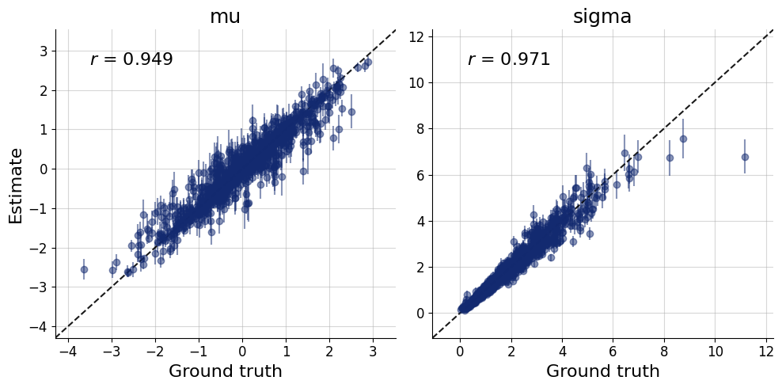
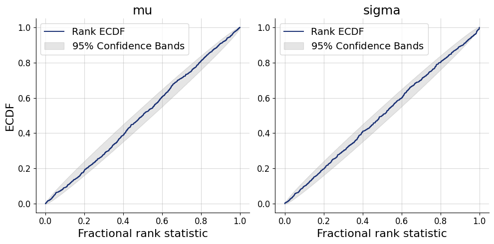
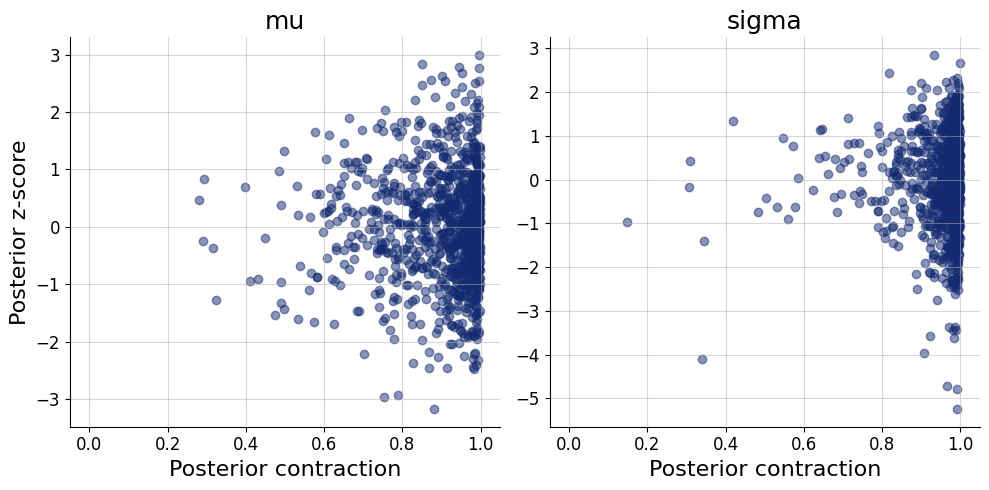
Inference
inference_data = dict(
y = np.random.normal(loc=1, scale=0.6, size=(1, 50)),
n = 50)num_samples=2_000posterior=workflow.sample(num_samples=num_samples, conditions=inference_data)
posterior=keras.tree.map_structure(np.squeeze, posterior)fig=bf.diagnostics.pairs_posterior(posterior)posterior_predictives = simulator.sample(num_samples, n=50, **posterior)summary(inference_data["y"]){'mean': np.float64(1.0854894225709761), 'sd': np.float64(0.5950735427958067)}fig=bf.diagnostics.pairs_samples(posterior_predictives, variable_keys=["mean", "sd"])fig=plt.violinplot(posterior_predictives["y"], showmeans=True, side="low")
fig=plt.scatter(x=[i+1 for i in range(inference_data["n"])], y=inference_data["y"], c="black", zorder=100)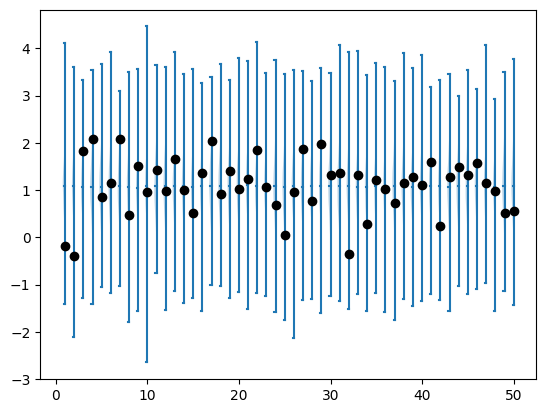
summaries_null=workflow.summary_network(workflow.simulate_adapted(1000)['summary_variables'])
summaries_ref=workflow.summary_network(workflow.simulate_adapted(500)['summary_variables'], training=False)mmd_null = [
bf.metrics.functional.maximum_mean_discrepancy(summaries_null, summaries_ref[i:i+1]).numpy() for i in range(500)
]summaries_obs=workflow.summary_network(adapter(inference_data, strict=False)["summary_variables"])
mmd_obs=bf.metrics.functional.maximum_mean_discrepancy(summaries_null, summaries_obs)fig=bf.diagnostics.plots.mmd_hypothesis_test(mmd_null, mmd_obs)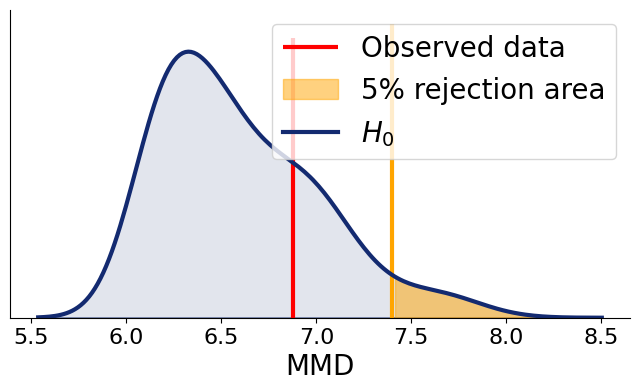
Further exercises
- Train a BayesFlow model that estimates the mean vector and a variance-covariance matrix of a 2D Gaussian.
- Train a BayesFlow model that estimates parameter of any other distribution. You are free to choose which (some examples: Gamma, Negative binomial, Weibull,…)
- The implementation of the normal model imposes one particular configuration of the priors on the parameters
"mu"and"sigma". This is relatively impractical, because not every time such priors would be reasonable. It is also relatively common to fit a model with different priors to investigate how robust are your inferences against prior specification. To do this, it is handy if you train a single BayesFlow model that can make inferences with different prior specifications. You can do this by varying the prior specification during simulations. For example,
hyper_mu_mu = np.random.uniform(-100, 100)
mu = np.random.normal(hyper_mu_mu)would generate different priors for mu, depending on the value of the hyperparameter \(\mu_\mu\). If you condition the network on the values of the hyperparameters, you can train the networks to be able to use different priors during inference. Try to implement such a network.